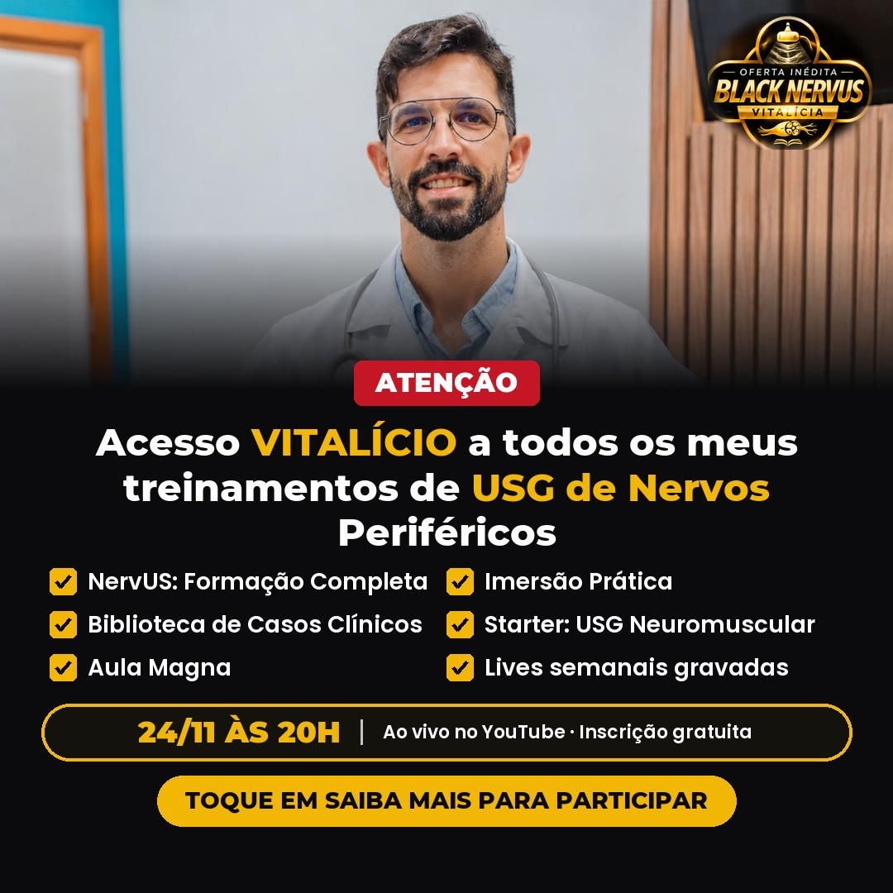
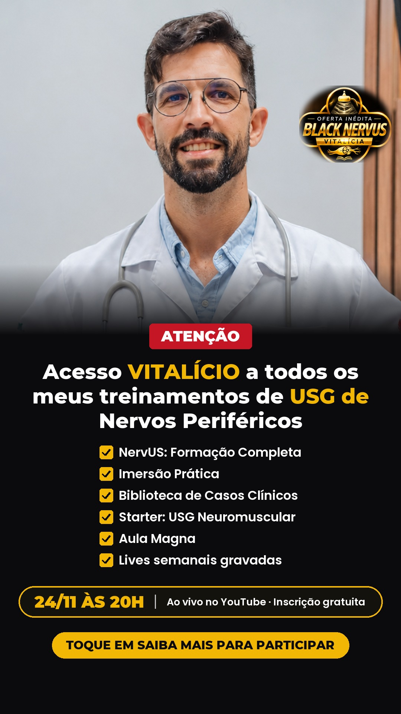

A1
Vitalício com o rosto dele
Junta o rosto do Dr. Glauber com a lista do acesso vitalício, as duas mensagens que mais trouxeram inscritos.
Legenda
Pela primeira vez, todos os meus treinamentos de USG de Nervos Periféricos com acesso VITALÍCIO.
NervUS Formação Completa, Imersão Prática, Biblioteca de Casos Clínicos, Starter Neuromuscular, Aula Magna e as Lives gravadas.
Eu revelo a oferta no dia 24/11, às 20h, ao vivo no YouTube. A inscrição é gratuita: toque em Saiba Mais.